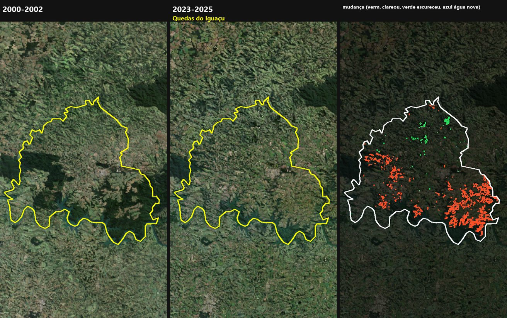
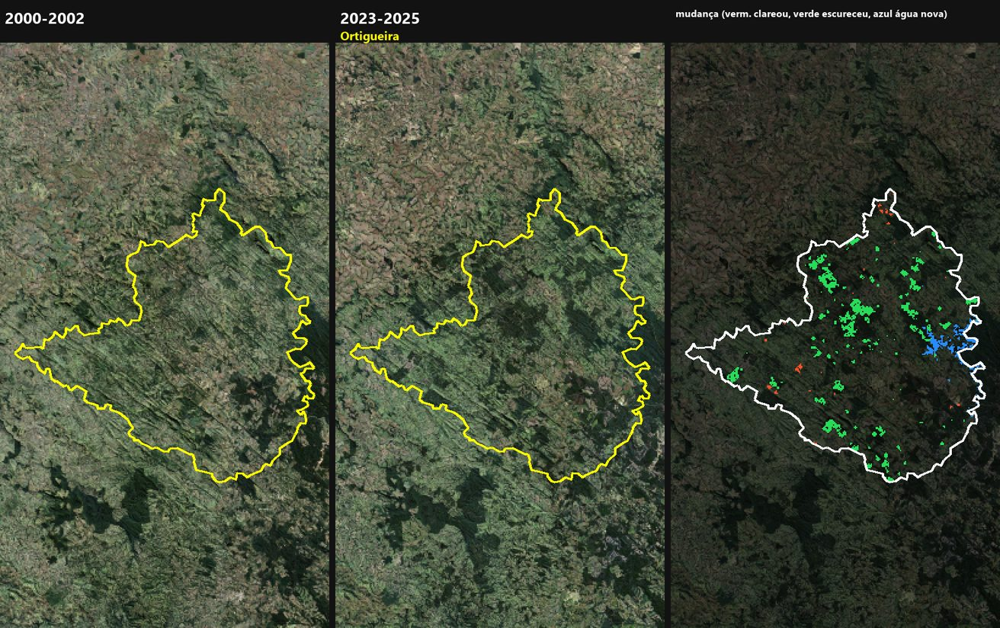

A vertical Landsat timelapse (2000-2025) for every municipality in Paraná, plus a change ranking that shows where the landscape actually moved.
Google Earth Timelapse shows the planet; this project does the same at the scale people care about, their own municipality. For each of Paraná's 399 municipalities the pipeline builds 26 annual cloud-free Landsat composites (2000-2025) and renders a 1080x1920 video for phones, ready for social media and local news.
Making 26 years of Landsat look continuous is mostly about defects: Landsat 7 stripes after 2003, the 2012 gap between Landsat 5 and 8, detector striping, haze and seasonal flicker. Each one is handled by an explicit, documented and tested rule.
The same frames feed a change analysis: the 2000-2002 median against 2023-2025, pixel by pixel, inside each municipal boundary, ignoring crop rotation and pre-existing water. Without the water mask, the colour change of the Itaipu reservoir put Foz do Iguaçu first at 20%; the real figure is 0.8%.
399 of 399 videos generated and validated (14.2 s and 354 frames each, 5.7 GB in total), and a ranking of every municipality by visible change: Ortigueira leads in absolute area (170 km²) and Miraselva in share of territory (13.5%).

